The Cloud and You
By Michael J Rees
Text copyright (c) 2014 Michael J Rees
All Rights Reserved
To Margot for her constant support
I am a retired academic who has spent 40 years teaching and researching computer science. More than 15 years ago I attended the 7th World Wide Web Conference in Brisbane, Australia. I saw a demonstration of a web browser showing a page that allowed the user to edit the page content directly in that browser. I was well and truly hooked.
This was my introduction to what became known as Web 2.0. Later still we called it AJAX after the mix of technology used. Then the marketers started calling it The Cloud. Back in the 1990s though we always drew the Internet as a cloud shape in diagrams. It's not surprising, therefore, that the Cloud has become a metaphor for the Internet.
Today when talking about the Cloud we mean the process by which people access software, computer processing, and files over the Web, instead of on their desktops. Over those more than 15 years I have reveled in the Cloud, using it for both professional purposes and in my everyday life.
As you might guess I use the Cloud for very many things but to give you a flavor my uses include:
When I praise the Cloud to my friends and colleagues I am often asked "What is the Cloud and why is it so useful? I dedcided to answer by creating an online course, from which this ebook has been created. In a couple of hours of your time you will learn about the main features of the Cloud and how you, too, can use it to accomplish everyday tasks.
No matter whether you are an individual, a professional or work for a company, I hope you enjoy what you read here, especially if you complete the practical workshops included in this book. It's all about the Cloud and you.
This course introduces the Cloud and how it relates to you in your everyday life.

Many of us have access to a range of devices such as:
All these devices are capable of connecting to the Cloud to bring us a wide range of facilities as we conduct our daily lives.
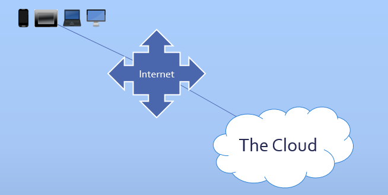Your device you must be connected to the Internet to access the Cloud.
The Cloud features are managed by a very large set of servers numbering in the millions operated by a large range of companies big and small.
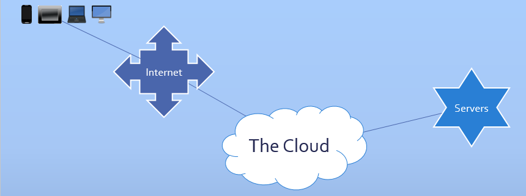Servers are specialized computers containing processors, local memory and fast network adapters to connect them to the Cloud.
For the sake of efficiency large collections of servers are typically housed in data centers.
Software running on the servers provides a large range of useful services to the user devices connected to the Cloud.
Often large, coordinated groups of individual servers work together to provide the Cloud services
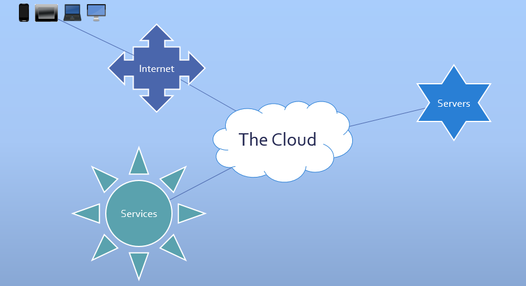Probably the most widely used service today is secure Cloud storage for documents and data of all kinds.
High capacity disk drives are present in very large numbers housed alongside the servers in the data centers to provide this vital Cloud storage service.
Once stored in the Cloud documents and data can be accessed from any device connected to the Internet given the correct security credentials.
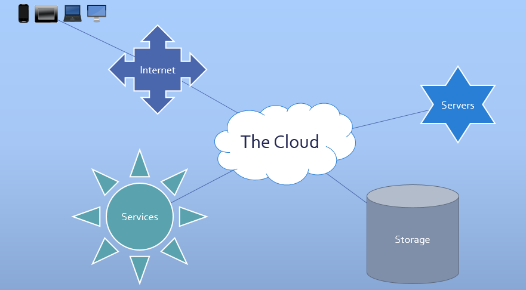The good news is that the large scale of Cloud services and the increasingly convenient access to the Internet has driven down the cost of access.
Enterprise users have been able to access the Cloud for some time, but this course focuses particularly on how individuals, professionals and small businesses can gain benefits from the Cloud.
I look forward to explaining how the Cloud and You can work together.
Now you are familiar with the main Cloud components let's see how to connect with the Cloud. On all the devices mentioned so far you can run a web browser to connect with the vast majority of cloud services.
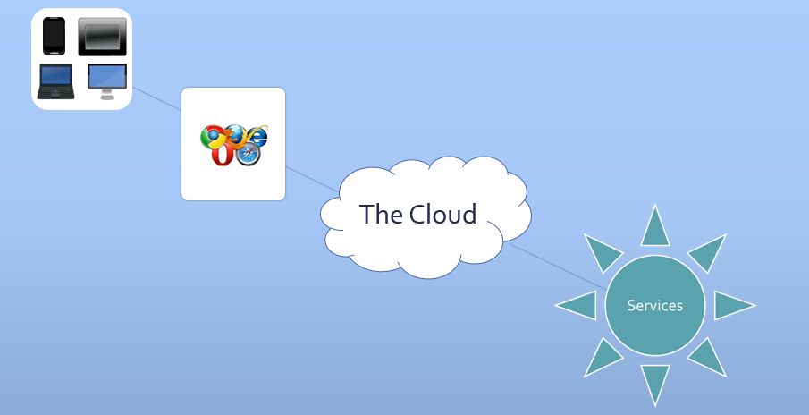It's a simple matter of entering the address of the cloud service into your browser's address field.
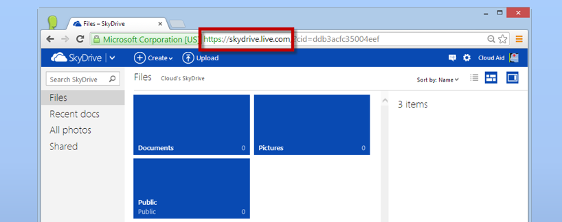Remember the Web and the Internet are quite different things
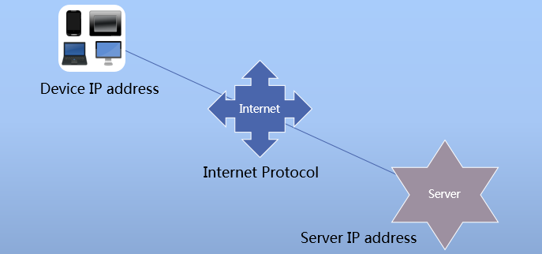The Internet is a network of networks connecting devices with unique Internet Protocol, IP addresses. It allows data to be exchanged between, say, your smartphone and a Cloud server.
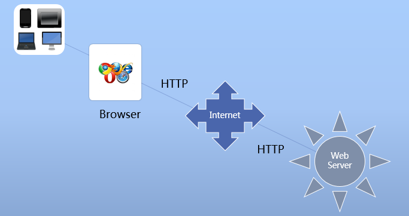In contrast the Web uses HyperText Transfer Protocol, HTTP, to communicate between the browser on a device and a specialist Web server in the Cloud.
Here we see two of the most popular Cloud storage services, Google Drive and OneDrive from Microsoft. Google Drive is being used on a tablet and OneDrive on a laptop.
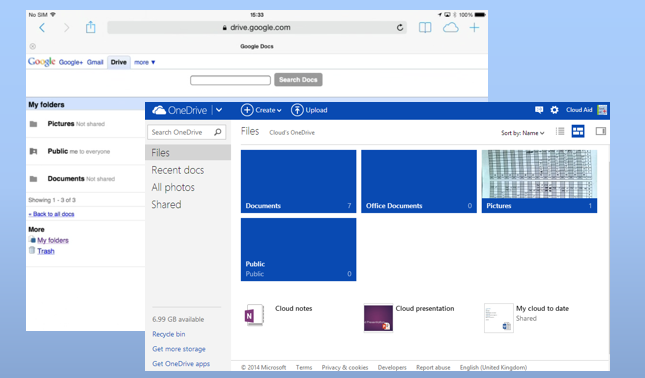Cloud service will usually detect the browser and device and alter the displayed contents accordingly.
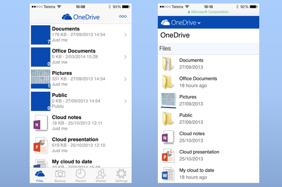To make the interface more convenient many Cloud services provide dedicated apps. On the left is a dedicated smartphone app for OneDrive. On the right we see the same OneDrive account being displayed in a browser on a smartphone.
To enable dedicated apps, most professional Cloud services offer an alternative to browser access called an API or Application Programming Interface. This is an acronym you will see often in connection with the Cloud. An API is used by apps running on a device to access the specific Cloud service. All apps that share data between devices or other users will make use of the Cloud, and as such can be called Cloud apps.
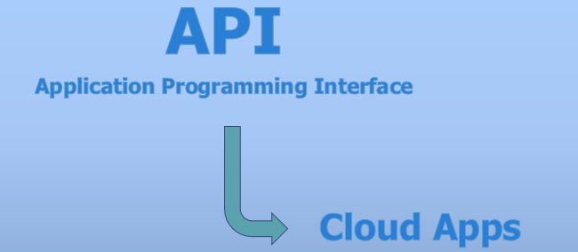Of course where data and files are shared there is the need for an access authorization system. Typically a user name and password security system is used to grant you access to your Cloud data, and for you to control data sharing, if needed.
In summary, connecting to the Cloud is as simple as typing an address into a browser or running a special app on your device. A system of user names and passwords makes access to the Cloud secure.
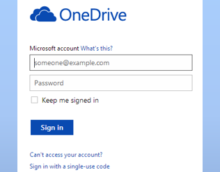Now you have an overview of the main Cloud components let's look at the question of why the Cloud is so useful.
Put simply there are three compelling reasons:
Let me look at each one in turn.
I have mentioned the large range of different Internet-connected devices that can access the Cloud. They literally number in the billions so wherever you are on the globe you can use your own or someone else's device for access.
The browser or Cloud app can detect the device type and show content to accommodate the screen size and touch interface. Since browser access is immediate the Cloud service can always display the latest version. There is no need for the continual and often annoying process of downloading and installing updated versions of apps.
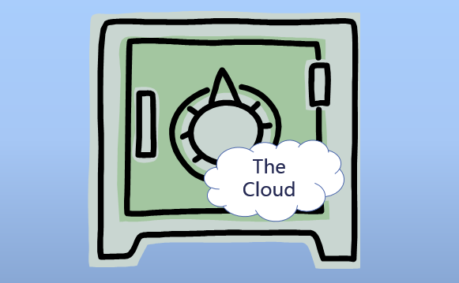You can think of the Cloud as a single location, even though the services, documents and data are likely to be spread across different servers in different data centers possibly even in different countries.
To you the Cloud is a single, albeit nebulous, place. As such it is well named.
The distributed nature of the servers and disk storage also gives us security against data loss. Providers of Cloud services deliberately keep multiple copies of your documents and data. At the same time this affords a backup service and protects against hardware failure.
The Cloud gives you access to your own documents and data from all your devices. This is device sharing. In addition most Cloud services also allow you to share access with other people you specify, or even make your documents and data accessible to all.
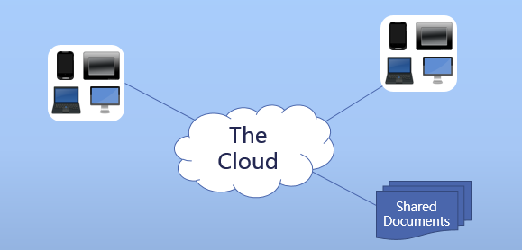Granting read access allows you distribute information to all and sundry – you become your own publisher. Most powerfully of all is when you grant edit access to others – they can then share the information creation process with you. Teams and organisations find shared editing a vital tool particularly with customers.
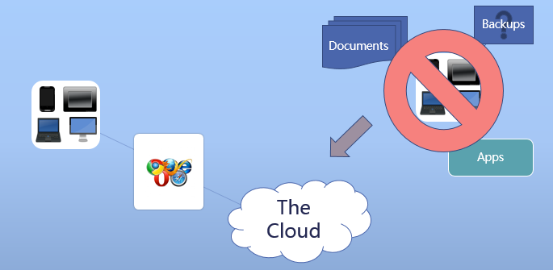To obtain the major benefits I listed you must change your approach to computing. You should no longer be tied to a particular computing device at home or work where your data is stored by apps you have to download and install. Sadly it is probable you rarely, if ever, backup these particular computers. Even if you back up consistently you are no longer tied to backing up your documents and data and storing the backups in a single remote location. Instead you can perform your computing tasks and access your documents from any of your devices connected to the Cloud. Backup comes for free.
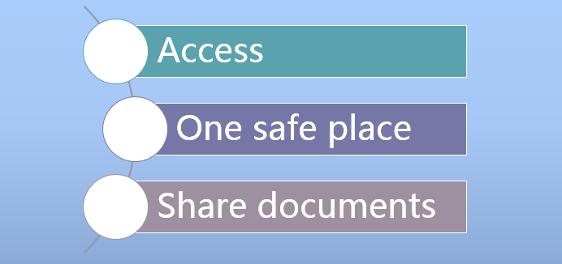I have listed the considerable benefits of the Cloud, but as always these come with some associated risks.
You must understand the potential pitfalls in order weigh up if the Cloud is for you at the end of the day.
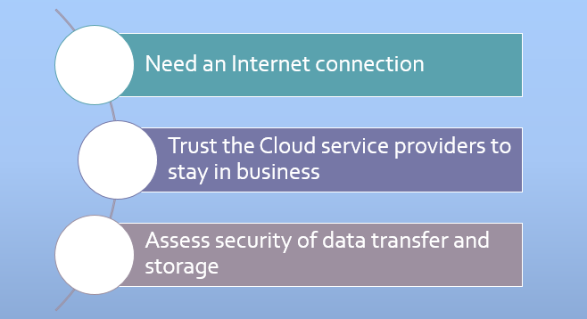Again being brief there are three significant pitfalls:
Let me look at each one in turn.
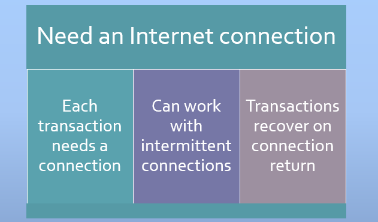You must access the Cloud via the Internet so you need an Internet connection for each transaction or task. However the connection does not have to be continuous. Indeed a browser only connects to the Cloud when it has a transaction to carry out.
For example when checking for email messages the browser connects and receives a list of messages. Only when the user wants to read, delete or send a new message does the browser connect again. If the Internet connection goes down then a delay occurs until it is available once more, annoying but the transaction recovers when connection is possible.
In many countries, with increasing availability of mobile phone networks and Wi-Fi, Internet access is becoming ubiquitous making the use of the Cloud more and more feasible.
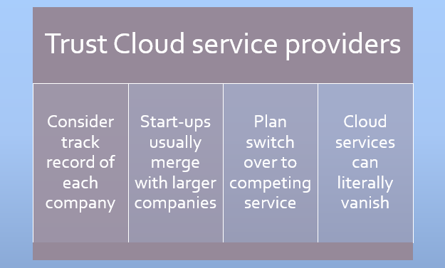Just as with Internet services there are many companies providing Cloud services both big and small. When you use free or paid Cloud services from a company you must judge the likelihood of their service being reliable and long lasting. Some small Cloud service companies have ceased operating, as have individual services from large companies like Google. All will give a lead time to allow you to copy your data to a competing service.
Many Cloud service providers are small startups who are eventually taken over by larger companies that either continue the service or provide similar ones. Individuals, professionals and small businesses in particular, should have a plan to switch Cloud services when there is a heavy reliance on one particular service. This is a major point of difference to locally installed software and data that will stay on a local computer even if the software is no longer updated and supported.
Security is the most common criticism heard against the adoption of the Cloud and there are two aspects, data transport through the Internet and data storage security.
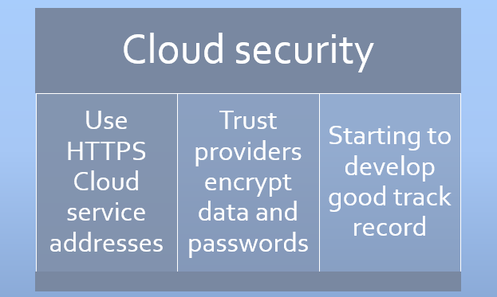Let's start with data transport between the device and the Cloud. By design Internet Protocol passes data packets through intermediate servers. Each server can keep a copy of the data packet and inspect its contents. Fortunately using secure HTTP, called HTTPS, data is encrypted as it passes through the Internet and arrives safely.
For data storage security we have to trust the Cloud service providers to encrypt our passwords and documents. Despite rare lapses today's commercial Cloud service providers offer a very high level of data storage security.
A third aspect of Cloud security that usually affects only large organisations is the geographical location of their Cloud storage. The location affects whether local law enforcement agencies can demand copies of documents and data stored in the Cloud. As well some government organisations are legally constrained to hold their data in their country of operations. If these are concerns you must only use a Cloud service provider that can guarantee the geographical security you require.
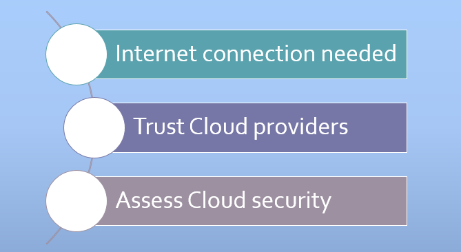To summarise, there are some downsides to the Cloud:
Nevertheless in my judgment and experience the risks for individuals, professionals and small business are low enough to make use of the Cloud worthwhile.

Having covered the benefits and pitfalls of the Cloud I would like to mention a few of the more important Cloud services selected from the thousands available today.
Several of these Cloud services will be useful in your day-to-day activities.
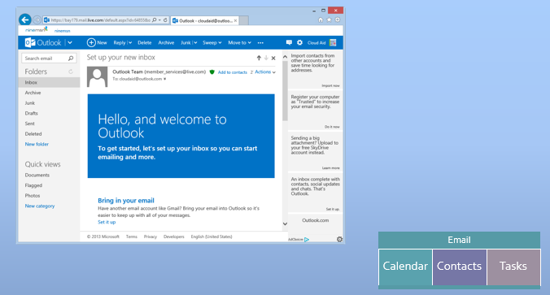As I mentioned, online email was the genesis of the Cloud, and many large companies offer Cloud email services. I show Outlook.com, a part of Microsoft's OneDrive, and the successor to Hotmail which was one of the first and largest of the email services. Other major competitors are Yahoo mail, Google mail and Apple's iCloud with a host of other companies in their wake. Of course, virtually every Internet Service Provider also gives their users access to web mail.
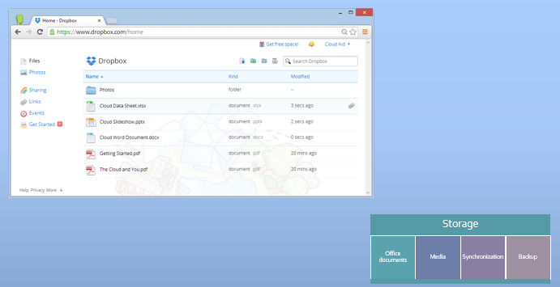I will cover Cloud storage in later lectures but it is the next most important service after email. The very popular Dropbox is shown here. Like several competing services it offers storage for all file types with a generic file system user interface typical of Windows Explorer and Mac Finder. Dropbox runs across all the devices I have discussed, and provides the typical synchronization and backup capability expected of such services.
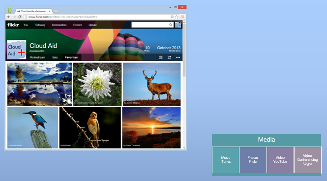Storing media files like photos, music and video is just a special variant of Cloud storage. The features of the user interface experience in the browser are tailored to the different types of media involved. Here on Yahoo’s Flickr, a venerable site for storing photos, the features of the service for storing and sharing photos are extensive. This is a vey important photo service since Flickr now offers 1 terabyte of Cloud storage for free, that’s a cool one thousand gigabytes!
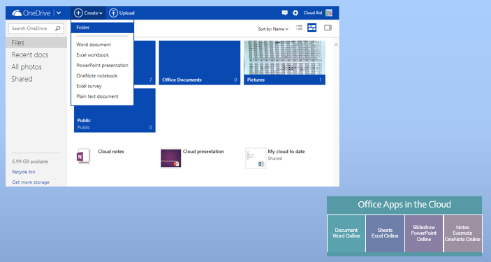Again I will cover Cloud office apps more fully in a later lecture. Most users today receive email attachments in popular document formats from Microsoft Office, particularly Word, Excel and PowerPoint documents. Being able to read and create these formats in the Cloud is a popular service. Microsoft offers Cloud app equivalents to Word, Excel and PowerPoint via OneDrive. Another major competitor in this space is Google Apps. Snippets of data like notes, addresses, images, screen dumps, voice narration and so on, are difficult to store cohesively and find again later. This has led to development of specific Cloud notes apps like the leader Evernote, and Microsoft’s OneNote.
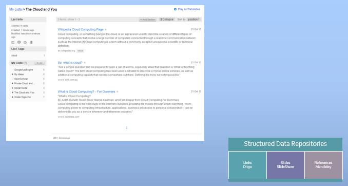A structured data repository is just a flowery term for a database resident in the Cloud where users can create and edit data records, and then search for them intelligently at a later date. The interface presented in the browser or Cloud app is carefully designed to be convenient for the type of data stored in the collection. I show the Diigo Cloud service used to store web links with associated labels and descriptions. Diigo goes much further allowing you to store whole web page content for reading later, annotating parts of pages and sharing any or all of this with other users. Academic references curated on Mendeley, and slide shows stored on SlideShare are a couple more common examples of structured data.
Online shopping and financial services are Cloud services I will mention in a later lecture. The list of services is still far from exhausted, but it would probably take a whole course to do justice to the full range of Cloud services. Suffice it to say there are few computing tasks that cannot be undertaken successfully in the Cloud. These days you would have to mount a special case to avoid the use of Cloud services.